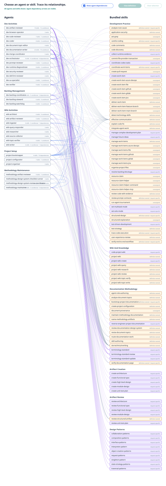

{kind=link}
AGENTS.md Is Local Reference
Root and nested AGENTS.md files select project family, tiers, paths, validation commands, and data boundaries. They do not duplicate shared skills.
This reference defines the portable agent roles and skill loadouts in the development methodology bundle. It is customer-ready: roles are generic, project-specific setup is documented in AGENTS-PLAN.yaml, operational routing comes from AGENTS.md files, and skills stay small enough to load only when the current job needs them.
A role is an invokable job boundary with stable authority, inputs, outputs, and handoff expectations.
Root and nested AGENTS.md files describe project family, application tiers, paths, checks, data rules, and local terminology.
The role loads only the methodology, stack, quality, wiki, or domain skills needed for the current request.
Codex, Claude Code, Gemini CLI, Junie, or another host receives a runtime-specific role file or skill metadata.
Review checklists, verification notes, handoffs, and run records make the work inspectable after completion.
AGENTS.md is the project-local selector. It should point the skills router to the right tiers, paths, validation commands, and data rules without copying the body of shared skills or redefining role authority.
Canonical roles request semantic model profiles. Runtime adapters resolve those profiles to concrete models, and each role loads its bounded skill set. Detailed coding and review-evidence rules remain in the applicable skills.

The role model has three operating categories: agents that maintain this methodology bundle, agents that set up or update a downstream project, and agents used during normal development in that downstream project.
| Signal | Router action | Example loadout |
|---|---|---|
| User changes this methodology bundle | Use a Methodology Maintenance Agent so source skills, metadata, README, design HTML, tests, and shared-install behavior stay aligned. | development-methodology, review-structured, documentation-page-verifier, validation scripts, and metadata scripts as needed. |
| User sets up or updates a downstream project | Use a Project Setup And Update Agent to create or refresh AGENTS-PLAN.yaml, local AGENTS.md routing, documentation routes, and project-specific validation evidence. | development-methodology, create-agents-plan, documentation-bootstrap, documentation-page-verifier, and code-project-wiki when code-aware docs are involved. |
| User asks for code change | Use Coding Agent unless the task is primarily review, verification, documentation, or merge coordination. | route-technology-skills, careful-coding, code-discovery, project-wiki-query, plus specialized variants resolved from AGENTS.md and live file evidence. |
| User asks for review | Use Code Review Agent with fresh context and finding-first output. Extract evidence from the applicable coding-skill checklists before synthesis. | route-technology-skills, code-review-evidence, review-structured, and specialized skills proven applicable by the routing receipt. |
| User asks for documentation artifact | Use Documentation Writer and development-methodology to select exactly one creation route and write the source-backed artifact. | development-methodology plus create-functional-spec, create-architecture, create-high-level-design, create-module-design, create-unit-test-plan, or create-project-wiki. |
| User asks to set up project agents or skills | Use Project Agent Setup Agent to create AGENTS-PLAN.yaml and decide whether nested plans are needed. | development-methodology, create-agents-plan, documentation-page-verifier, and documentation-bootstrap for first-time setup. |
| User asks for artifact review | Use Artifact Review Agent with the matching artifact review skill and completed checklist evidence. | review-architecture, review-functional-spec, review-high-level-design, review-module-design, review-unit-test-plan, or review-project-wiki. |
| Target files are in a specialized subtree | Read the nearest nested AGENTS.md, run the resolver for the exact subtree, and preserve its routing receipt before loading local guidance. | Load only specialized variants supported by source-backed project bindings and live scoped evidence; block stale or unavailable required bindings. |
| Work spans multiple phases or agents | Use Development Orchestrator to split the work and preserve handoff, claim, and verification records. | structured-design, manage-backlog, agent-claim, agent-work-merge, review-structured. |
Root and nested AGENTS.md files select project family, tiers, paths, validation commands, and data boundaries. They do not duplicate shared skills.
Skills contain portable procedures. They are loaded by role and task, not copied into project instructions or role prompts.
New roles are added only when authority, output contract, lifecycle phase, context isolation, or runtime resource ownership changes.
Reviews, verification, handoffs, and wiki updates should leave enough evidence for another agent or human to inspect the decision later.
Customer maintainers may edit installed skills and native agent definitions directly. Keep the original names so loadouts and cross-references remain valid.
A later update compares the old generic, installed customer, and new generic definitions. The user chooses what to keep, merge, replace, or remove.